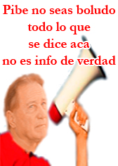

Don Patadon es una página dedicada al humor deportivo, activa desde abril del 2008. En esta web se intenta desdramatizar el futbol más que nada utilizando el humor, la acidez y la ironía. La política “humorística” de Don Patadon en cuanto a lo futbolístico es sencilla, hacemos humor con jugadores, entrenadores, dirigentes, barras, periodistas y políticos ligados al deporte. Nunca nos metemos con el hincha genuino, ese que va a la cancha pagando su entrada o la cuota social, ese que resigna horas de laburo, de familia, de lo que sea con tal de alentar a su equipo. Lo más lindo que tiene el futbol es el verdadero hincha, el que sufre y acompaña en las malas y el que disfruta las buenas. En esta web nunca vas a ver comentarios de quien tiene más aguante, quien tiene más hinchas, quien menos, quien canta menos, que hinchada es pecho o no alienta o no llena la cancha. Esta página no bardea hinchas. Eso se lo dejamos a los “De Frente” del Olé y a otras paginas.
Podes ser muy fanático de un club o tener un ídolo, que aparezca parodiado en esta página no le afecta ni a ese ídolo ni a ese club. Igual, si no podes comprender eso, nos vas a putear como ya paso miles de veces, tómatelo con calma, con humor, para hacerte mala sangre ya tenes la realidad. Después de todo, el humor es quien nos reconcilia con la realidad.
En la web no somos hinchas de ningún equipo, somos como los jugadores de la CEFAR: no tenemos club. Si te tomas esta página en serio, seguramente te va a salir una ulcera al pedo. Según Alejandro Fantino, somos parte del” Show”, acá iría un (?) pero nunca usamos el (?) porque somos de la vieja escuela y nos hacemos cargo de lo que decimos
